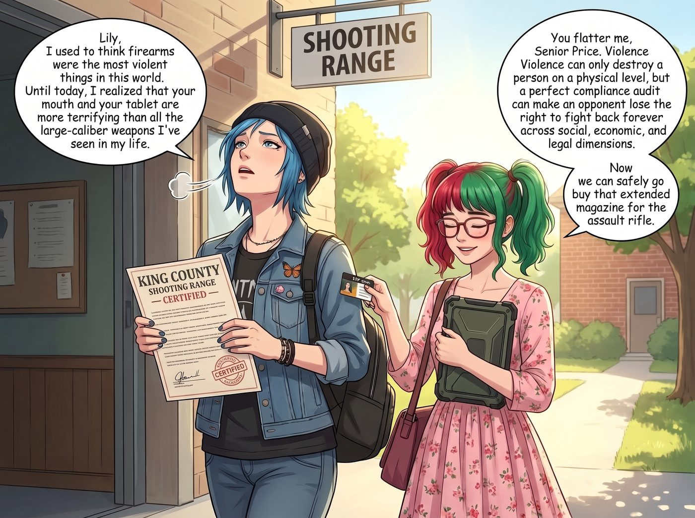

靶場合規審計

華盛頓州金縣邊緣的一家室內靶場教室裡，頭頂的螢光燈發出刺耳的電流聲。
Chloe 穿著破洞牛仔褲和皮夾克，生無可戀地癱坐在塑膠椅上。為了給她那把新改裝的半自動步槍合法上牌，她被迫來這裡參加法定的半自動突擊步槍安全訓練課程。對一個能在閉眼狀態下把散彈槍拆解再組裝的街頭霸王來說，這種課程簡直是對她靈魂的物理折磨。
而在她旁邊，坐著穿著粉色碎花裙、懷裡抱著一個軍規級防摔平板電腦的實習生 Lily。
一、合規無小事
「Lily，妳真的不需要跟來。」Chloe 痛苦地揉著眉心，「這只是一個走過場的無聊培訓。那個挺著啤酒肚的教練只會給我們放一些老舊的安全宣導片，然後收走錢發證書。妳在這裡完全是浪費妳那顆能摧毀華爾街的大腦。」
「Price 學姐，合規無小事。」Lily 乖巧地推了推圓框眼鏡，大眼睛裡閃爍著嚴謹的光芒，「這項法案的核心不僅在於槍枝操作，更在於安全儲存責任與法律後果認知。作為二號車廂的首席合規官，我必須確保您接受的培訓在法理上是絕對無懈可擊的，以免日後引發不必要的民事連帶責任。」
這時，靶場的安全教練 Bob 走了進來。這是一位戴著戰術墨鏡、手臂上紋著美國國旗的退役老兵。他把一本厚厚的教材摔在講台上，用一種極度老派且充滿大男子主義的語氣開始了課程。
「聽好了，菜鳥們。法規規定我必須教你們怎麼鎖好你們的槍。」Bob 輕蔑地哼了一聲，「但在真實世界裡，如果有人半夜闖進你的房子，你可沒有時間去轉那個該死的密碼鎖。在華盛頓州，如果有人破門而入，你只需要開槍，然後告訴警察你感到生命受到了威脅。懂了嗎？」
二、行政黑魔法的精準狙擊
Chloe 翻了個白眼，剛想敷衍地點點頭早點拿到證書走人，旁邊卻突然舉起了一隻白皙的小手。
「教練先生，打擾一下。」
Lily 站了起來，平板電腦螢幕的反光映在她的鏡片上，散發出一種令資本家膽寒的行政威脅感。
「您剛才的表述存在嚴重的法律瑕疵，甚至構成了潛在的教唆過失殺人。」Lily 的聲音軟糯甜美，卻讓整個教室的氣溫驟降了五度，「首先，華盛頓州並沒有成文的所謂城堡法，我們依賴的是判例法中關於正當防衛的規定，防衛必須具備即刻的必要性。如果您教導學員只要破門而入就直接開槍，一旦學員在現實中照做並導致非致命威脅者死亡，原告律師將會直接調閱您的授課錄音。」
Bob 愣住了，他摘下墨鏡，看著這個看起來只有高三歲數的女孩，結結巴巴地說：「小姑娘，我這是在教實戰經驗……」
「您這是在製造連帶賠償責任。」
Lily 根本不給他喘息的機會，手指在平板上飛速滑動：「其次，根據法案中關於社區安全保護的細則，如果您的學員因為未妥善存放槍枝而被未成年人盜用，您作為發放安全證書的教練，如果未能提供符合州警政署標準的完整時長安全儲存教育，將面臨職業保險拒賠的風險。」
Lily 抬起頭，用一種極度溫柔的眼神看著滿頭大汗的 Bob：「我剛剛核對了您提交給執照局的教學大綱。您在自殺預防與槍枝安全儲存這一章節的授課時間，比法定最低標準少了整整十四分鐘。而且，您剛才的發言已經構成了未經許可的法律諮詢。如果我現在將這段錄音提交給州檢察長辦公室，您的靶場營業執照和教練資格證將在四十八小時內被無限期吊銷。」
三、退役老兵的投降
教室裡陷入了死一般的寂靜。
其他幾個來上課的大漢嚇得連大氣都不敢喘，紛紛拿筆記本瘋狂記錄 Lily 剛才背出來的法律條款。
Bob 的臉色由紅轉白，再轉成一種瀕臨崩潰的灰敗。他當了二十年教練，見過槍管炸膛，見過新手走火，但他這輩子從來沒有見過有人能把安全法案像一把上了膛的加特林機槍一樣，頂在他的營業執照上瘋狂掃射。
「那……那妳說該怎麼辦？」這位退役老兵的聲音已經帶上了一絲哀求。
「很簡單。」Lily 乖巧地坐回椅子上，將 Chloe 的空白證書推到了講台邊緣，「為了彌補您在教學大綱上的時間缺失以及法律表述的嚴重錯誤，我建議您現在立刻簽署這份特別免責與學分補償確認書。只要您證明 Chloe Price 學姐已經自主掌握了超越本課程標準的合規安全知識，我就可以不把這份針對您的合規審計報告發送給州政府。」
不到十秒鐘，Bob 顫抖著手，在 Chloe 的證書上蓋下了考核通過的鋼印，甚至還主動附贈了兩張靶場的終身免費 VIP 射擊卡，只求這尊行政黑魔法師能趕緊離開他的教室。
四、比槍枝更恐怖的存在
當 Chloe 拿著那張甚至連第一節課都沒上完就蓋好章的證書走出靶場時，她看著外面的陽光，深深地吸了一口氣。
「Lily，」Chloe 轉過頭，看著正在幫她整理背包的實習生，語氣中充滿了敬畏，「我以前以為槍枝是這個世界上最暴力的東西。直到今天我才發現，妳那張嘴和妳的平板電腦，比我這輩子見過的所有大口徑武器加起來都要恐怖。」
「Price 學姐過譽了。」Lily 溫柔地笑了笑，將一張靶場 VIP 卡塞進 Chloe 的口袋裡，「暴力只能在物理層面上摧毀一個人，但完美的合規審查，可以在社會、經濟和法律的三重維度上，讓對手永遠失去反擊的資格。我們現在可以安心去買那支突擊步槍的擴充彈匣了呢。」